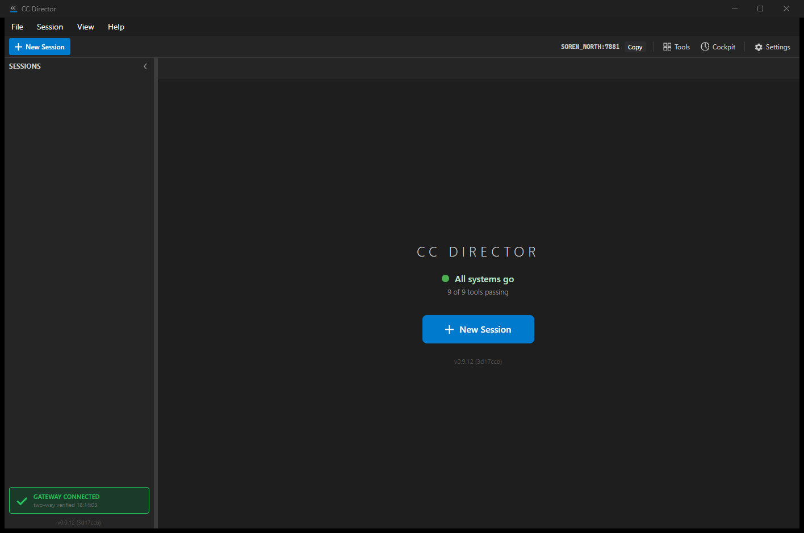
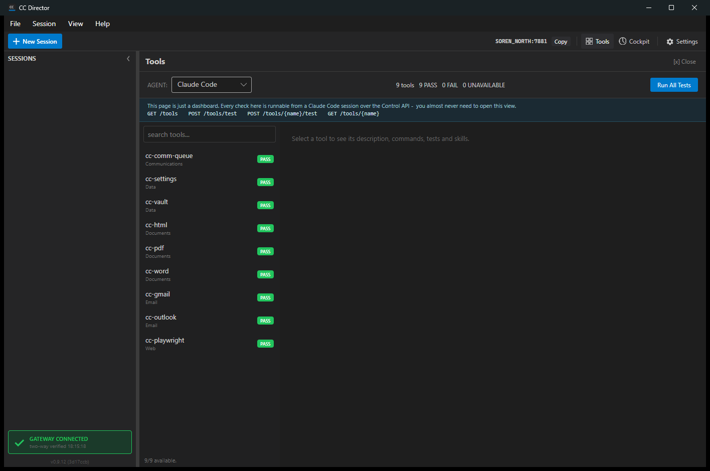

Branch: fix/448-tools-on-path Machine: SOREN_NORTH Test build: slot 6 (v0.9.12)
The Director judged whether a cc-* tool was "available" by checking only the application's bundled bin directory. On a machine where the tools resolve on the user's PATH but the running build's bundled bin directory is empty, the Home readiness row reported "0 of 32 on PATH" (red) and the Tools dashboard showed "0 built" - a fully working setup looked broken.
| Concept | Meaning | Field |
|---|---|---|
| Built into this build | Present in the application's bundled bin directory (or its sibling python scripts directory). Kept as a diagnostic. | ToolDescriptor.IsBuilt (unchanged meaning) |
| Available on PATH | The command name resolves on the user's PATH (PATH + PATHEXT), using the same primitive the session-launch preflight uses (ExecutableResolver.Resolve). | ToolDescriptor.IsOnPath (new) |
| Available (user-facing signal) | Runnable on this machine: built into this build OR on PATH. Unavailable only when on neither. | ToolDescriptor.IsAvailable (new, computed) |
The Home readiness count and the Tools dashboard now report IsAvailable. The Control API
/tools endpoint gates execution on IsAvailable and exposes the new
isOnPath / isAvailable fields. The IsBuilt diagnostic is preserved
everywhere it was used (version reading, gateway facts inventory).
Running the production ToolCatalogService against an EMPTY bundled bin directory plus this
machine's real PATH/PATHEXT - the exact reported bug environment. Before the fix this reported 0 available;
now every tool that resolves on PATH is available even though none are built in the (empty) bin directory.
bundled bin dir : ...\issue448_emptybin_... (EMPTY - the bug condition) tools=9 built(in bin)=0 onPath=9 available=9 cc-comm-queue IsBuilt=False IsOnPath=True IsAvailable=True cc-settings IsBuilt=False IsOnPath=True IsAvailable=True cc-vault IsBuilt=False IsOnPath=True IsAvailable=True cc-html IsBuilt=False IsOnPath=True IsAvailable=True cc-pdf IsBuilt=False IsOnPath=True IsAvailable=True cc-word IsBuilt=False IsOnPath=True IsAvailable=True cc-gmail IsBuilt=False IsOnPath=True IsAvailable=True cc-outlook IsBuilt=False IsOnPath=True IsAvailable=True cc-playwright IsBuilt=False IsOnPath=True IsAvailable=True === where.exe cc-vault (confirms PATH presence) === C:\Users\soren\AppData\Local\cc-director\bin\cc-vault.cmd
Full text: path-only-availability.txt.
The Home page reports All systems go - 9 of 9 tools passing (green). The
tools resolve on PATH (where.exe cc-vault above), and the readiness count reflects them.

The Tools dashboard summary reads 9 tools 9 PASS 0 FAIL 0 UNAVAILABLE, the footer reads 9/9 available, and every tool carries a green PASS chip. No tool is labelled "NOT BUILT" / unavailable. (The "NOT BUILT" badge was renamed to "UNAVAILABLE" and now means on neither PATH nor the bin directory.)

Deterministic tests inject an explicit PATH/PATHEXT so they never depend on the real machine PATH:
| Test | Asserts | Result |
|---|---|---|
| GetCatalog_OnPathButNotInBinDir_IsAvailable | on PATH, absent from bin = Available (IsBuilt false, IsOnPath true) | PASS |
| GetCatalog_OnNeitherPathNorBinDir_IsUnavailable | on neither = Unavailable, signal stays honest | PASS |
| GetCatalog_InBinDirOnly_IsAvailable_NoRegression | built into the bundle = Available (no regression) | PASS |
| GetCatalog_OnPathButNotInBinDir_BinaryPathPointsAtThePathResolvedExe | PATH-only tool's runnable path is the PATH-resolved exe | PASS |
Full ToolCatalogServiceTests: 19 passed, 0 failed. Full CcDirector.Core.Tests
suite: 2116 passed, 0 failed, 4 skipped (no regressions). Output:
unit-tests.txt.
GET /tools returns each tool with isBuilt, isOnPath, and
isAvailable; all 9 reported available. Full response: tools-endpoint.json.
The Cockpit tools page and the gateway read the same catalog and reflect the change automatically.